松山文創園區(松山菸廠)
{kind=link}
{kind=link}
{kind=link}
等級：直轄市定古蹟
年代：日昭和年間12年(西元1937年)
沿革
1905年-台灣菸草專賣制度開始建立
1911年-興建火車站台北菸草工廠
1937~1945年-日軍發動太平洋戰爭，捲菸除供應台灣市場，也外銷華中、華南及南洋地區
1937年-台灣總督府專賣局在台北市松山地區興建「台灣總督府專賣局松山菸草工廠」
1939年-鍋爐房、機械修理廠、製菸工廠、工作作業場完工
1939年10月-開始開工生產捲菸
1940年-完成辦公廳及檢查是，全區完工
1945年-戰後光復，台灣省專賣局接收松山菸廠，並更名為「台灣省專賣局松山菸草工廠」
1947年-台灣省專賣局改制成立台灣省菸酒公賣局，松山菸廠再更名為「台灣省專菸酒公賣局松山菸廠」，專制捲菸、菸絲及雪茄等菸草製品
1987年-菸廠增產達到高峰，員工約2000人，年產值曾逾210億新台幣，對國家財政生意貢獻非凡
1998年-松山菸廠停止生產，遷併台北菸廠，正式走入歷史
2001年-台北市政府將松山菸廠指定為第99處市定古蹟，其中辦公廳、製菸拱場、鍋爐房、一至五號倉庫為古蹟本體，蓮花池、運輸軌道及光復後新建倉庫一併納為古蹟保存範圍
2011年-松山文化創意園區正式對外開放
園區地圖：
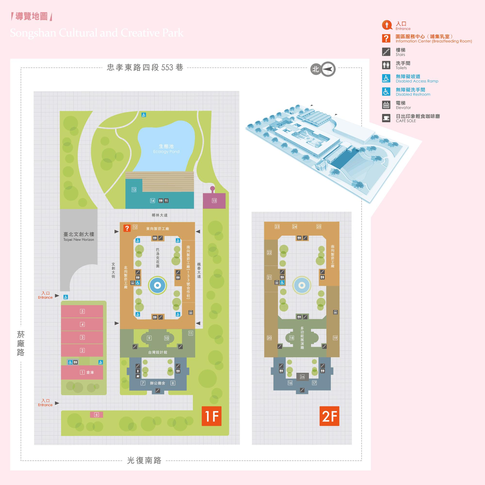 (圖片取自網路){kind=link}
走入松山文創園區，老舊的一至五號倉庫，至今已經變成了各式展覽的活動會場，遊客可以利用假日與家人或朋友一起欣賞不同主題的活動。
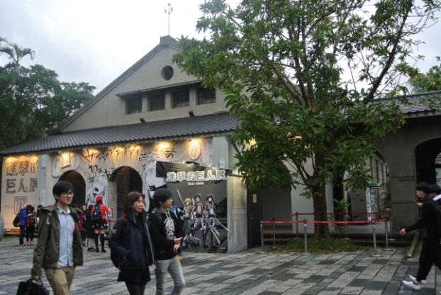
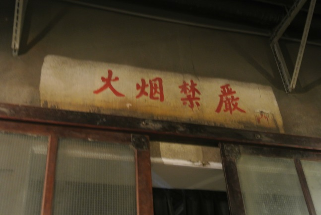
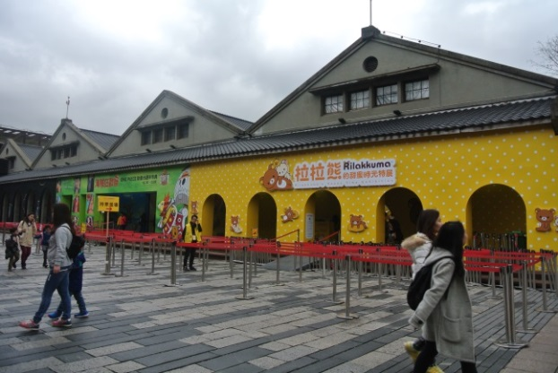
(拍攝於2016/02/04) 進入園區內部，大廣場（文創大街）上是藝術家展現自信之作的地方，各作品結合了藝術與科技，讓參觀完展覽的民眾，也可以欣賞新奇且不同的創意，有時更可以從中得到嶄新的創作靈感。
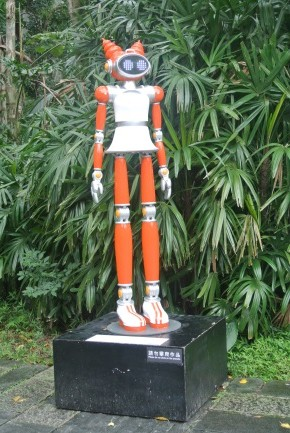
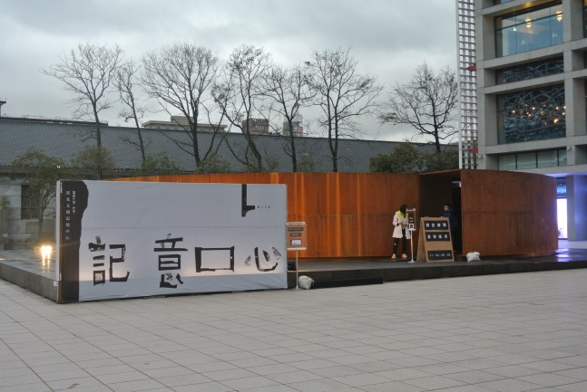
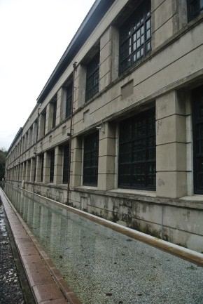
(拍攝於2016/02/04)
包圍著巴洛克花園的四方形建築，是當年製菸的工廠主體，面對一片長廊，可以看見一間間的房間是過去的女員工們包裝菸草產品的場所，而如今成了空無一人，但卻是見證日治時期殖民經濟的重要歷史回憶之地。
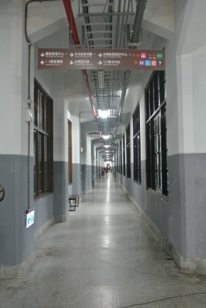
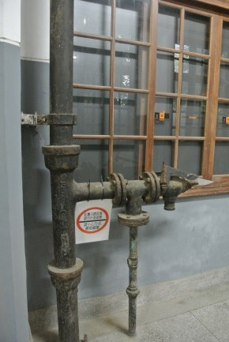
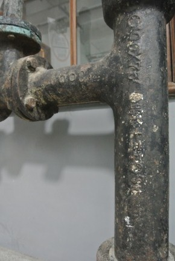
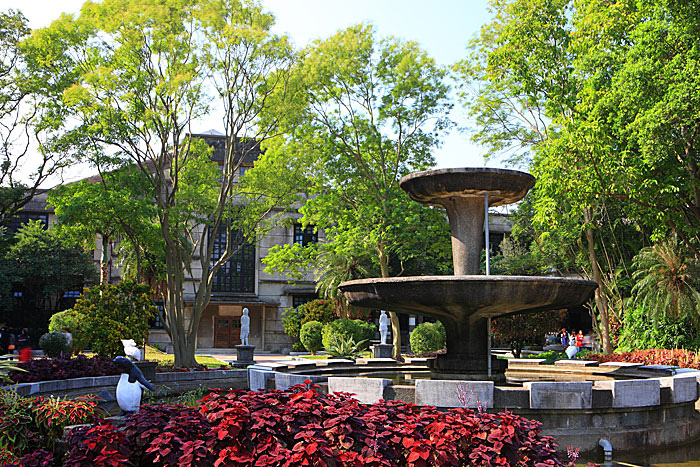
(拍攝於2016/02/04 拍攝於2016/02/04 拍攝於2016/02/04 圖片取自網路)
在體驗老菸廠磚瓦的寧靜之餘，南向的製菸工廠與各種多元內容結合搖身一變成了133號合作社！
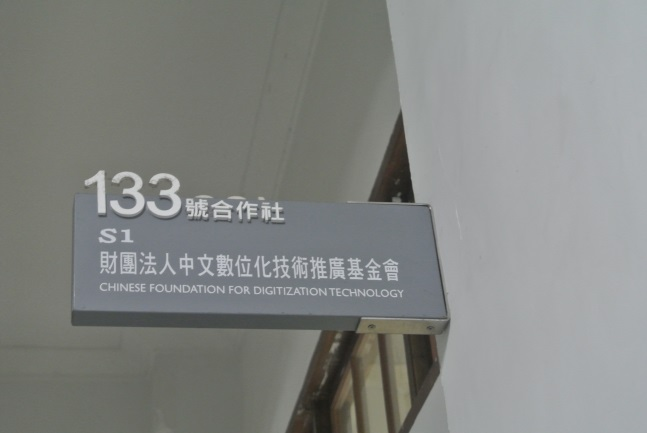
(拍攝於2016/02/04)
東向製菸廠的松菸小賣所，也是園區內的一個特色，賣的多為創作家的小巧思，各式商品都呈現了不同的創意，參訪之餘，空出時間逛一下松菸小賣所，會是個不錯的選擇！
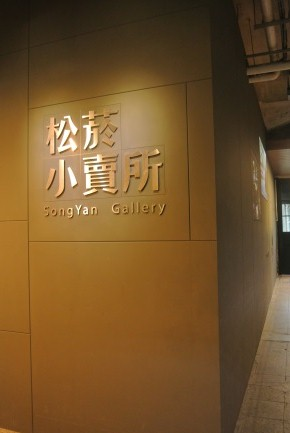
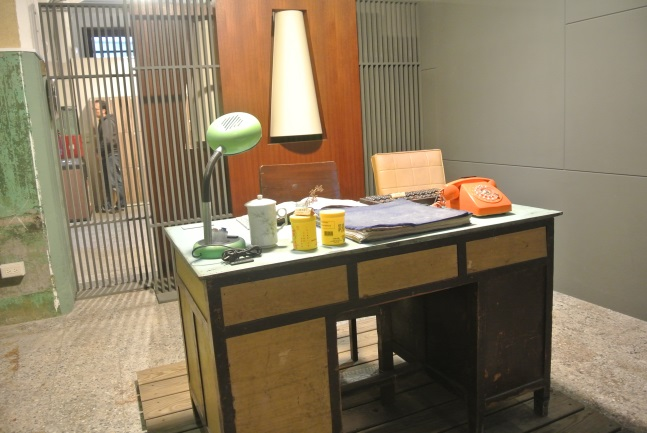
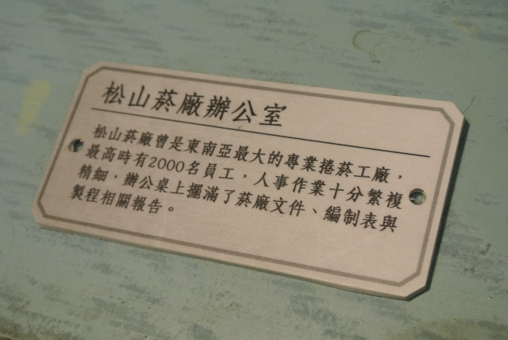
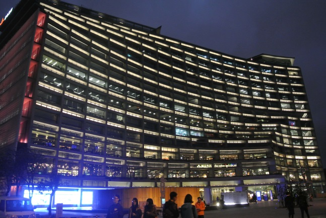
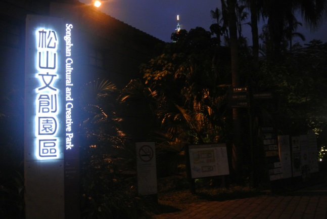
(拍攝於2016/02/04)
{kind=link}
{kind=link}
{kind=link}
{kind=link}
{kind=link}
{kind=link}
{kind=link}
{kind=link}
{kind=link}
{kind=link}
{kind=link}
{kind=link}
{kind=link}
{kind=link}
{kind=link}
{kind=link}
地址：11072台北市信義區光復南路133號
交通資訊
〈園區出入口〉 【菸廠出入口】：於市民大道及光復南路口，從市民大道於光復南 路匝道下，行駛方向由西往東往菸廠路駛入。
〈捷運國父紀念館站〉 靠近倉庫群、台北文創大樓這一側 步驟一、搭乘捷運板南線至捷運國父紀念館站 步驟二、從五號出口出站 步驟三、言光復南路步行至菸廠路（市民大道、光復南路口）約550公尺
〈公車〉 忠孝東路【聯合報站】： 212、232、240、263、270、299、忠孝新幹線
光復南路【捷運國父紀念館站】： 204、212、232、240、254、266、278、282、288、299、672、忠孝新幹線